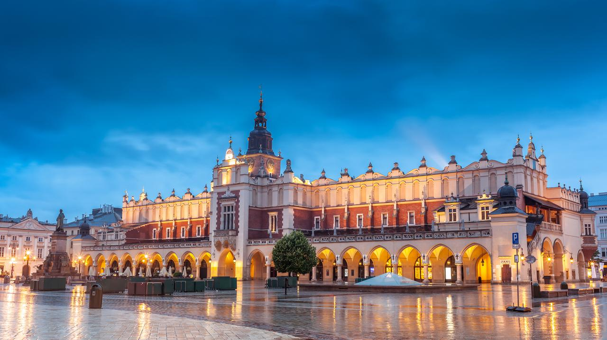
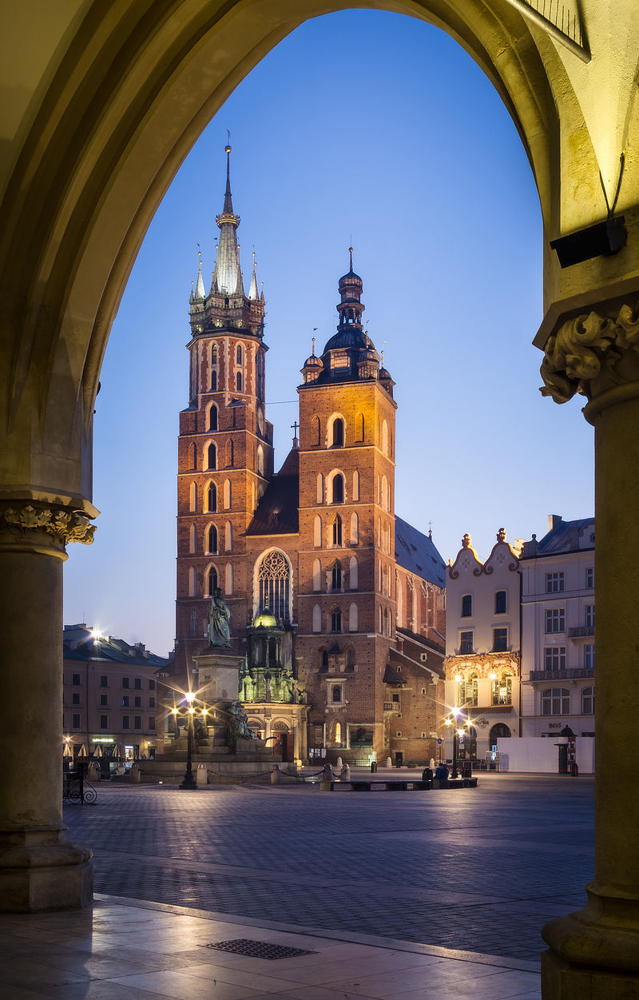

TOP 3 BEST ATTRACTIONS IN CRACOW

1. Wawel Castle
The Wawel Royal Castle and the Wawel Hill constitute the most historically and culturally important site in Poland. For centuries the residence of kings and the symbol of Polish statehood, the castle is now one of the country’s premier art museums. [source: Wikipedia]

2. Cloth Hall
It was once a major centre of international trade. Travelling merchants met there to discuss business and to barter. During its golden age in the 15th century, the hall was the source of a variety of exotic imports from the east – spices, silk, leather and wax – while Kraków itself exported textiles, lead, and salt from the Wieliczka Salt Mine. [source: Wikipedia]
3. St. Mary's Basilica
is a Brick Gothic church adjacent to the Main Market Square in Kraków, Poland. Built in the 14th century, its foundations date back to the early 13th century and serve as one of the best examples of Polish Gothic architecture. [source: Wikipedia]